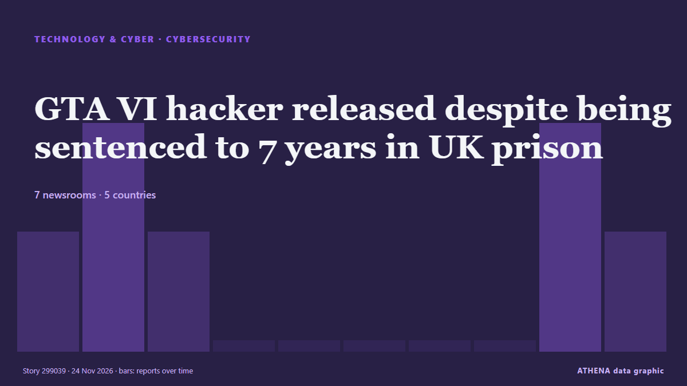

Cybersecurity
SponsoredPresented by  Cybernetics and Artificial Intelligence Lab Welcome to the Cybernetics and Artificial Intelligence Laboratory, established at the Department of Business Administration of the National and Kapodistrian University of Athens. The lab is headed by Professor Dimitrios Thomakos. The lab aims to do research that can be published in top venues. Our research uses tools and methods of Artificial Intelligence, and lies in the following areas: - Forecasting - Decision making - Cyber security - Finance We are always looking forward to collaborating with exceptional students!
Cybernetics and Artificial Intelligence Lab Welcome to the Cybernetics and Artificial Intelligence Laboratory, established at the Department of Business Administration of the National and Kapodistrian University of Athens. The lab is headed by Professor Dimitrios Thomakos. The lab aims to do research that can be published in top venues. Our research uses tools and methods of Artificial Intelligence, and lies in the following areas: - Forecasting - Decision making - Cyber security - Finance We are always looking forward to collaborating with exceptional students!
| 11 Nov | 0 |
|---|---|
| 12 Nov | 0 |
| 13 Nov | 0 |
| 14 Nov | 0 |
| 15 Nov | 0 |
| 16 Nov | 0 |
| 17 Nov | 0 |
| 18 Nov | 0 |
| 19 Nov | 4 |
| 20 Nov | 4 |
| 21 Nov | 2 |
| 22 Nov | 0 |
| 23 Nov | 4 |
| 24 Nov | 0 |

GTA VI hacker released despite being sentenced to 7 years in UK prison
Arion Kurtaj, 21, who leaked 90 gameplay videos in 2022, released on license after court accounts for time spent in custody and hospital. from Anadolu Agency (English)
Hackers Exploit Cisco Expressway Vulnerability Soon After PoC Release
Attackers hacked clustered Cisco Expressway devices at a Russian organization and prepared tooling for lateral movement. from SecurityWeek
Best Black Friday Nintendo Switch 2 Deals (2026): Switch 2 Bundles and Games
Get your game on for less with these Black Friday deals on official Nintendo Switch 2 bundles and games. from Wired
White House replaces cyber director Sean Cairncross amid widespread tech outages
Sean Cairncross will be replaced by Pentagon chief information officer Kirsten Davies. from CNBC World
WhatsApp Patches 3 Security Flaws, Including Android Bug Suspected of Use in Scams
Meta-owned WhatsApp has addressed security vulnerabilities, including one impacting its Android app that it suspects may have been exploited in connection with scam messages. from The Hacker News
14-year-old hacker held for trying to sell private data of 4,000 Agniveers on dark web: Delhi Police
New Delhi: A 14-year-old boy from Haryana's Ballabhgarh was apprehended by the Delhi Police Special Cell for allegedly hacking into a website and attempting to sell sensitive data linked to around… from Deccan Herald
UK Finds Fix for Fridge and Freezer Vulnerability After European Hacks
UK refrigeration flaw could have exposed systems to hackers despite earlier confidence. from Express Tribune
European Commission hit by major cyberattack
The attack has disrupted internal systems for more than ten days, with investigators still assessing whether sensitive staff data was compromised. from The Portugal News
Hackers are using AI to carry out cyber attacks. Experts say Kiwi organisations must act
Over the past week, there’s been a rise in attackers using open source AI tool Artex to target organisations worldwide. from RNZ National